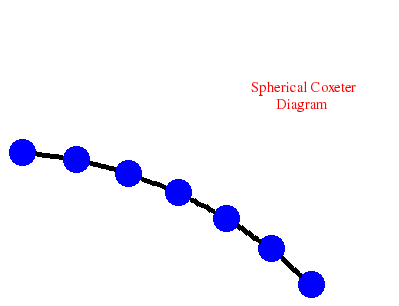
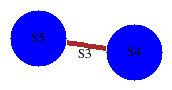
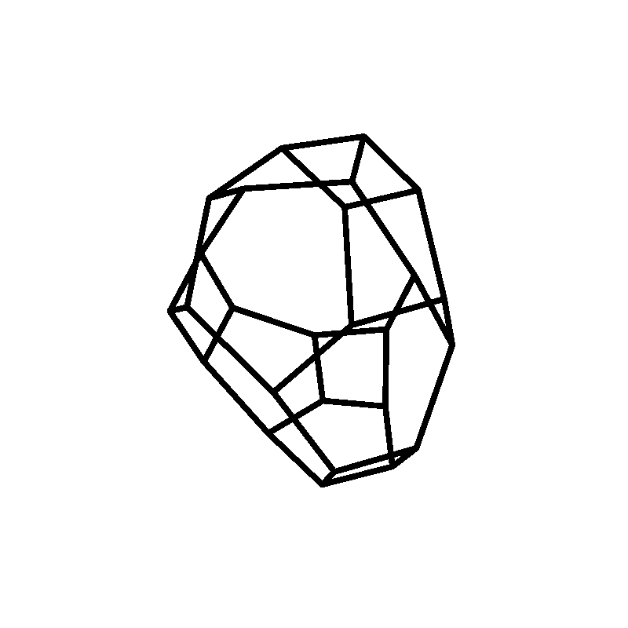

|
|||
|---|---|---|---|
| HAP
can be used to make basic calculations in the cohomology of finite and
infinite groups.
For example, to calculate the integral homology Hn(D201,Z)
of the dihedral group of order 402 in dimension n=99 we could perform
the following commands. |
|||
| gap>
F:=FreeGroup(2);; x:=F.1;; y:=F.2;; gap> G:=F/[x^2,y^201,(x*y)^2];; G:=Image(IsomorphismPermGroup(G));; gap> GroupHomology(G,99); [ 2, 3, 67 ] gap> time; 4845 |
|||
| The
HAP command GroupHomology(G,n)
returns the abelian group
invariants of the n-dimensional homology of the group G with
coefficients in the integers Z with trivial G-action. We see that H99(D201,Z)
= Z402, (Timings are in milliseconds, and most are measured
on a
1.4GHz laptop with 256MB memory.) The above example has two features that dramatically help the computations. Firstly, D201 is a relatively small group. Secondly, D201 has periodic homology with period 4 (meaning that Hn(D201,Z) = Hn+4(D201,Z) for n>0) and so the homology groups themselves are small. Typically, the homology of larger non-periodic groups can only be computed in low dimensions. The following commands show that:
|
|||
| gap>
GroupHomology(AlternatingGroup(7),10);time; [ 2, 3, 3, 3 ] 1756 gap> S:=Image(IsomorphismPermGroup(SL(3,3)));; gap> GroupHomology(S,8);time; [ 2, 3 ] 6340 gap> B5:=[[1,[2,3]],[2,[3,3]],[3,[4,3]],[4,[5,4]]];; gap> GroupHomology(["Coxeter",D],4);time; [ 2, 2, 2, 2, 2, 2, 2, 2, 2, 2, 2, 2 ] 56240 gap> K:=MaximalSubgroups(SylowSubgroup(SL(2,Integers mod 5^3),5))[2]; gap> K:=Image(IsomorphismPcGroup(K)); gap> GroupHomology(K,3);time; [ 5, 5, 5, 5, 5, 5, 125 ] 3254 gap> G:=AbelianGroup([2,4,6,8,10,12]);; gap> GroupHomology(G,6);time; [ 2, 2, 2, 2, 2, 2, 2, 2, 2, 2, 2, 2, 2, 2, 2, 2, 2, 2, 2, 2, 2, 2, 2, 2, 2, 2, 2, 2, 2, 2, 2, 2, 2, 2, 2, 2, 2, 2, 2, 2, 2, 2, 2, 2, 2, 2, 2, 2, 2, 2, 2, 2, 2, 2, 2, 2, 2, 2, 2, 2, 2, 2, 2, 2, 2, 2, 2, 2, 2, 2, 2, 2, 2, 2, 2, 2, 2, 2, 2, 2, 2, 2, 2, 2, 2, 2, 2, 2, 2, 2, 2, 2, 2, 2, 2, 2, 2, 2, 2, 2, 2, 2, 2, 2, 2, 2, 2, 2, 2, 2, 2, 2, 2, 2, 2, 2, 2, 2, 2, 2, 2, 2, 2, 2, 2, 2, 2, 2, 2, 2, 2, 2, 2, 2, 2, 2, 2, 2, 2, 2, 2, 2, 2, 2, 2, 2, 2, 2, 2, 2, 2, 2, 2, 2, 2, 2, 2, 2, 2, 2, 2, 2, 2, 2, 2, 2, 2, 2, 2, 2, 2, 2, 2, 2, 2, 2, 2, 2, 2, 2, 2, 2, 2, 2, 2, 2, 2, 2, 2, 2, 2, 2, 2, 2, 2, 2, 2, 2, 2, 2, 2, 2, 2, 2, 2, 2, 2, 2, 2, 2, 2, 2, 2, 2, 2, 2, 2, 2, 2, 2, 2, 2, 2, 2, 2, 2, 2, 2, 2, 2, 2, 2, 2, 2, 2, 2, 2, 2, 2, 2, 2, 2, 2, 2, 2, 2, 2, 2, 2, 2, 2, 2, 2, 2, 2, 2, 2, 2, 2, 2, 2, 2, 2, 2, 2, 2, 2, 2, 2, 2, 2, 2, 2, 2, 2, 2, 2, 2, 2, 2, 4, 4, 4, 4, 4, 4, 4, 4, 4, 4, 4, 4, 12, 12, 12 ] 23265 gap> GroupHomology(MathieuGroup(23),2);time; [ ] 9395 gap> GroupHomology(MathieuGroup(23),3);time; [ ] 157961 gap> GroupHomology(MathieuGroup(23),4);time; [ ] 276853 gap> GroupHomology(MathieuGroup(23),5);time; [ 7 ] 20639802 gap> GroupHomology(MathieuGroup(24),3);time; [ 4, 3 ] 3205565 gap> GroupHomology(MathieuGroup(24),4); [ ] |
|||
| The
command GroupHomology()
returns the mod p homology when an optional third argument is set equal
to a prime p. The following shows that the Sylow 2-subgroup P of the
Mathieu simple group M24 has 6-dimensional mod 2 homology H6(P,Z2)=(Z2)143
. (The group P has order 1024 and the computation took over
two hours to complete.) |
|||
| gap>
GroupHomology(SylowSubgroup(MathieuGroup(24),2),6,2); [ 2, 2, 2, 2, 2, 2, 2, 2, 2, 2, 2, 2, 2, 2, 2, 2, 2, 2, 2, 2, 2, 2, 2, 2, 2, 2, 2, 2, 2, 2, 2, 2, 2, 2, 2, 2, 2, 2, 2, 2, 2, 2, 2, 2, 2, 2, 2, 2, 2, 2, 2, 2, 2, 2, 2, 2, 2, 2, 2, 2, 2, 2, 2, 2, 2, 2, 2, 2, 2, 2, 2, 2, 2, 2, 2, 2, 2, 2, 2, 2, 2, 2, 2, 2, 2, 2, 2, 2, 2, 2, 2, 2, 2, 2, 2, 2, 2, 2, 2, 2, 2, 2, 2, 2, 2, 2, 2, 2, 2, 2, 2, 2, 2, 2, 2, 2, 2, 2, 2, 2, 2, 2, 2, 2, 2, 2, 2, 2, 2, 2, 2, 2, 2, 2, 2, 2, 2, 2, 2, 2, 2, 2, 2 ] |
|||
| The
mod 2 cohomology ring H*(G,Z2) can be calculated
for smallish 2-groups G using the HAPprime extension package (which
uses the Singular system for commutative algebra). For instance, the
following commands compute a presentation and Poincare series for this
ring when G is the Sylow 2-subgroup of the Mathieu group M12 .
The commands use the Lyndon-Hochschild-Serre spectral sequence and
Groebner bases to verify that the computations are correct. |
|||
| gap>
G:=SylowSubgroup(MathieuGroup(12),2);; gap> Mod2CohomologyRingPresentation(G); Graded algebra GF(2)[ x_1, x_2, x_3, x_4, x_5, x_6, x_7 ] / [ x_2*x_3, x_1*x_3, x_3*x_4, x_1*x_2^2+x_2^3+x_2*x_5, x_1*x_2*x_5+x_2*x_6, x_1^2*x_4+x_2^2*x_4+x_2^2*x_5+x_1*x_6+x_4^2+x_4*x_5, x_1^3*x_2+x_2^4+x_1*x_2*x_4+x_2^2*x_4+x_2^2*x_5+x_1*x_6+x_2*x_6+x_4*x_5, x_1*x_4*x_5+x_4*x_6, x_2^3*x_5+x_2^2*x_6+x_2*x_5^2, x_1*x_5*x_6+x_3^2*x_7+x_3*x_5*x_6+x_6^2, x_2^2*x_4*x_5+x_2^2*x_5^2+x_1*x_4*x_6+x_3^2*x_7+x_3*x_5*x_6+x_4^2*x_5+x_4*x_\ 5^2+x_6^2, x_2^2*x_4^2+x_2^2*x_5^2+x_2*x_4*x_6+x_2*x_5*x_6, x_1^2*x_2*x_6+x_2^3*x_6+x_2^2*x_5^2+x_1*x_4*x_6+x_2*x_4*x_6+x_2*x_5*x_6+x_4^\ 2*x_5 ] with indeterminate degrees [ 1, 1, 1, 2, 2, 3, 4 ] gap> time; 19685 gap> G:=SylowSubgroup(MathieuGroup(12),2);; gap> PoincareSeriesLHS(G); (1)/(-x_1^3+3*x_1^2-3*x_1+1) gap> time; 11757 |
|||
The
homology of certain infinite groups can also be calculated. The
following commands show that
|
|||
| gap>
R:=ResolutionSL2Z(7,100); Resolution of length 100 in characteristic 0 for SL(2,Z[1/7]) . No contracting homotopy available. gap> Homology(TensorWithIntegers(R),99); [ 4, 12 ] gap> C:=ContractibleGcomplex("SL(3,Z)");; gap> R:=FreeGResolution(C,5);; gap> Homology(TensorWithIntegers(R),4); [ 2 ] gap> C:=ContractibleGcomplex("SL(2,Z[sqrt(-2)])");; gap> R:=FreeGResolution(C,7);; gap> Homology(TensorWithIntegers(R),6); [ 2 ] gap> D:=[ [1,[2,3]], [2,[3,3]], [3,[4,3]], [4,[5,3]], [5,[6,3]], [6,[7,3]] ];; gap> CoxeterDiagramDisplay(D);; 
gap> GroupHomology(D,5);time;[ 3 ] 13885 gap> S5:=SymmetricGroup(5);SetName(S5,"S5"); gap> S4:=SymmetricGroup(4);SetName(S4,"S4"); gap> A:=SymmetricGroup(3);SetName(A,"S3"); gap> AS5:=GroupHomomorphismByFunction(A,S5,x->x); gap> AS4:=GroupHomomorphismByFunction(A,S4,x->x); gap> D:=[S5,S4,[AS5,AS4]]; gap> GraphOfGroupsDisplay(D); 
gap> GroupHomology(D,5);time;[ 2, 2, 2, 2, 2 ] 22004 gap> GroupHomology(HeisenbergPcpGroup(5),5);time; [ 2, 2, 2, 2, 2, 2, 2, 2, 2, 2, 2, 2, 2, 2, 2, 2, 2, 2, 2, 2, 2, 2, 2, 2, 2, 2, 2, 2, 2, 2, 2, 2, 2, 2, 2, 2, 2, 2, 2, 2, 2, 2, 2, 6, 0, 0, 0, 0, 0, 0, 0, 0, 0, 0, 0, 0, 0, 0, 0, 0, 0, 0, 0, 0, 0, 0, 0, 0, 0, 0, 0, 0, 0, 0, 0, 0, 0, 0, 0, 0, 0, 0, 0, 0, 0, 0, 0, 0, 0, 0, 0, 0, 0, 0, 0, 0, 0, 0, 0, 0, 0, 0, 0, 0, 0, 0, 0, 0, 0, 0, 0, 0, 0, 0, 0, 0, 0, 0, 0, 0, 0, 0, 0, 0, 0, 0, 0, 0, 0, 0, 0, 0, 0, 0, 0, 0, 0, 0, 0, 0, 0, 0, 0, 0, 0, 0, 0, 0, 0, 0, 0, 0, 0, 0, 0, 0, 0, 0, 0, 0, 0, 0, 0, 0, 0, 0, 0, 0, 0, 0, 0, 0, 0, 0, 0, 0 ] 73765 gap> F:=FreeGroup(4);; N:=NilpotentQuotient(F,2);; gap> GroupHomology(N,4);time; [ 3, 3, 3, 3, 0, 0, 0, 0, 0, 0, 0, 0, 0, 0, 0, 0, 0, 0, 0, 0, 0, 0, 0, 0, 0, 0, 0, 0, 0, 0, 0, 0, 0, 0, 0, 0, 0, 0, 0, 0, 0, 0, 0, 0, 0, 0, 0, 0, 0, 0, 0, 0, 0, 0, 0, 0, 0, 0, 0, 0, 0, 0, 0, 0, 0, 0, 0, 0, 0, 0, 0, 0, 0, 0, 0, 0, 0, 0, 0, 0, 0, 0, 0, 0, 0, 0, 0, 0 ] 41967 gap> GroupHomology(SpaceGroupBBNWZ("P62"),5);time; [ 2, 2 ] 4336 |
|||
| The
command GroupHomology(G,n)
is a composite of several more basic HAP functions and
attempts, in a fairly crude way, to make reasonable choices for a
number of parameters in
the calculation of group homology. For a particular group G you would
almost
certainly be better off using the more basic functions directly and
making the
choices yourself! Similar comments apply to functions for cohomology
(ring) calculations. The subsequent pages of this manual explain the basic HAP functions. The intending reader should be aware that many of the examples are intended to illustrate the full potential of HAP and consequently may take many minutes (and in one or two cases hours) to run. |
|||
| For
a given crystallographic space group S the HAPcryst extension (which
uses the Cryst GAP package and the Polymake computational geometry
system) can be used to compute a fundamental cell which tiles euclidean
space in such a way that the tiling is respected by the action of S.
For instance, the following commands compute a fundamental cell for the
3-dimensional space group S with
Hermann-Mauguin symbol "P62" and exhibit the 1-skeleton of this cell. |
|||
| gap>
fd:=FundamentalDomainStandardSpaceGroup([1/2,1/3,1/5],SpaceGroupBBNWZ("P62"));; gap> Polymake(fd,"VISUAL_GRAPH"); 
|
|||
We
end this introduction by mentioning that HAP can also be used to make
calculations such as:
|
|||
| gap>
PoincareSeriesPrimePart(MathieuGroup(11),2,14); (x^4-x^3+x^2-x+1)/(x^6-x^5+x^4-2*x^3+x^2-x+1) gap> H:=ModPCohomologyGenerators(DihedralGroup(64),30);; gap> List(H[1], H[2]); [ 0, 1, 1, 2 ] gap> A:=MatLieAlgebra(Integers,3);; gap> LieAlgebraHomology(A,5); [ 2, 2, 2, 2, 2, 2, 2, 2, 0 ] gap> F:=FreeGroup(4);;G:=NilpotentQuotient(F,2);; gap> ThirdHomotopyGroupOfSuspensionB(G); [ 0, 0, 0, 0, 0, 0, 0, 0, 0, 0, 0, 0, 0, 0, 0, 0, 0, 0, 0, 0, 0, 0, 0, 0, 0, 0, 0, 0, 0, 0 ] gap> G:=Image(IsomorphismPermGroup(GL(4,3)));; gap> NonabelianSymmetricKernel_alt(G); [ [ ], [ 2 ] ] gap> F:=FreeGroup(4);;G:=NilpotentQuotient(F,2);; gap> L:=LowerCentralSeriesLieAlgebra(G);; gap> LeibnizAlgebraHomology(L,3); [ 2, 2, 2, 2, 2, 2, 2, 2, 6, 6, 6, 6, 6, 6, 6, 6, 6, 6, 6, 6, 6, 6, 6, 6, 0, 0, 0, 0, 0, 0, 0, 0, 0, 0, 0, 0, 0, 0, 0, 0, 0, 0, 0, 0, 0, 0, 0, 0, 0, 0, 0, 0, 0, 0, 0, 0, 0, 0, 0, 0, 0, 0, 0, 0, 0, 0, 0, 0, 0, 0, 0, 0, 0, 0, 0, 0, 0, 0, 0, 0, 0, 0, 0, 0, 0, 0, 0, 0, 0, 0, 0, 0, 0, 0, 0, 0, 0, 0, 0, 0, 0, 0, 0, 0, 0, 0, 0, 0, 0, 0, 0, 0, 0, 0, 0, 0, 0, 0, 0, 0, 0, 0, 0, 0, 0, 0, 0, 0, 0, 0, 0, 0, 0, 0, 0, 0, 0, 0, 0, 0, 0, 0, 0, 0, 0, 0, 0, 0, 0, 0, 0, 0, 0, 0, 0, 0, 0, 0, 0, 0, 0, 0, 0, 0, 0, 0, 0, 0, 0, 0, 0, 0, 0, 0, 0, 0, 0, 0, 0, 0, 0, 0, 0, 0, 0, 0, 0, 0, 0, 0, 0, 0, 0, 0, 0, 0, 0, 0, 0, 0 ] gap> F:=FreeGroup(6);;x:=F.1;;y:=F.2;;z:=F.3;;a:=F.4;;b:=F.5;;c:=F.6;; gap> rels:=[a^-1*x*y, b^-1*y*z, c^-1*z*x, a*x*(y*a)^-1, b*y*(z*b)^-1, c*z*(x*c)^-1];; gap> IsAspherical(F,rels);; Presentation is aspherical. gap> M:=GModuleByMats(GeneratorsOfGroup(GL(3,2)),GF(2));; gap> R:=ResolutionFpGModule(DesuspensionMtxModule(M),5);; gap> Cohomology(HomToIntegersModP(R,2),4); 2 gap> C:=AutomorphismGroupAsCatOneGroup(DihedralGroup(32));; gap> N:=NerveOfCatOneGroup(C,4);; gap> K:=ChainComplexOfSimplicialGroup(N);; gap> Homology(K,3); [ 2, 2, 4 ] |
|||
|